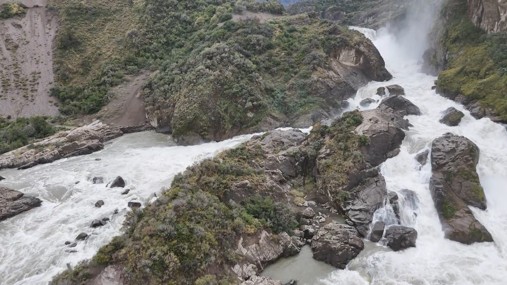

At the end of the road, the steppe opens onto a vast lake. Puerto Ingeniero Ibáñez looks out over Lake General Carrera from its northern shore, right where the Ibáñez River flows in. It is a quiet village of potters and smallholdings, and the departure point for the ferry to Chile Chico. A few kilometres away, the river plunges between rock walls at the Ibáñez River falls (Salto del Río Ibáñez).
This guide covers how to get to Puerto Ibáñez from Coyhaique, what to see in the village, where to find its clay pottery and rock art, how to visit the Ibáñez River falls safely and how to cross the lake by ferry.
Puerto Ingeniero Ibáñez is the seat of the municipality of Río Ibáñez, 116 km from Coyhaique according to the local council (another source gives 108 km). The road is paved all the way: from Coyhaique, take Route 7 south and then Route X-65 to the village.
Coming from Villa Cerro Castillo, there is an inland road, Route X-723, which the council puts at 37 km (Ruta de los Parques says about 45 km). Along it you can see Lago Tamango, with views of the Cerro Castillo massif, other lagoons and the Ibáñez River falls themselves. To combine both places, read our Coyhaique to Cerro Castillo road trip guide.
Without a car, daily minibuses run from Coyhaique to Villa Cerro Castillo and Puerto Ibáñez, according to the council.
In autumn and winter, watch out for frost on the road, as Ruta de los Parques advises for the whole area.
The lake on the village's doorstep is also called Chelenko. It is the largest lake in Chile and the second-largest freshwater lake in South America, shared with Argentina. Part of the municipality belongs to the Chelenko Zone of Tourist Interest (ZOIT), together with Chile Chico.
The municipality is small and rural: it had 2,666 inhabitants in the 2017 census. Long before the settlers, this land belonged to hunter-gatherers, ancestors of the Aonikenk (Tehuelche), who according to the council "left their painted hands in different corners of the municipality". In the early 20th century, settlers arrived from northern Chile and from Argentina, and the valley's microclimate favoured farming and livestock.
The council's highlights:
The village is also close to the Pallavicini border crossing into Argentina. The Tourist Information Office is at Carlos Soza 161 (WhatsApp +56 9 4470 7380). According to the council, the best season runs from October to April.
Clay pottery is the craft that "made the village famous", according to the council. Local artisans also work with wool and leather, and a typical piece is fired clay pottery covered in leather.
Chile's Ministry of Culture (2025) reports that the potters of Puerto Ibáñez decorate their pieces with motifs taken from local rock art. Artisan Marfa Águila has been digging clay near the Ibáñez River falls for decades, and the article also mentions artisan Angelita Fuentealba. Taking a piece home is a direct way to support the craft.
Near the falls there is a cave with rock paintings, now managed by Refugio Casa Piedra. It shows motifs such as a female guanaco with her young and geometric patterns. The Ministry does not give its age.
In the same municipality, at Villa Cerro Castillo, is the Paredón de las Manos (Wall of Hands): a rock face about 25 m long with paintings "around 5,000 years old" attributed to the Tehuelche people, according to Ruta de los Parques.
The falls are 6 km from Puerto Ingeniero Ibáñez, with car access and a viewpoint at the foot of the cascade, according to the council. From the village, head uphill to the west on the road to Levicán. You can also see them from Route X-723, which links Villa Cerro Castillo and Puerto Ibáñez.
Rather than a single drop, this is a series of falls and rapids on the Ibáñez River between rock walls. Our drone footage shows a gravel road crossing the river on a narrow bridge, between rocky islets, right in front of the falls.
The rock carved by the water is very old: according to the Aysén Regional Museum, "the rocks of the Ibáñez River falls are more than 150 million years old". In other words, the river runs over very ancient volcanic rock.
We found no official safety guidance specific to these falls. These are common-sense tips, not official rules:

From Puerto Ibáñez you can cross Lake General Carrera to Chile Chico. The current operator is Naviera Austral, with the vessel La Tehuelche. The crossing takes about 2 hours and must be booked in advance at navieraustral.cl.
In the low season there are 1 to 3 departures a day. Check the current timetable and fares on the operator's website.
Confirm before you travel: according to Naviera Austral, its contract ends on 4 January 2027. For later dates it only accepts "booking requests", which will be confirmed by the company that wins the new tender. Chile's Ministry of Public Works (MOP) is also assembling a new ferry in Puerto Ibáñez, the "Capitán Wellmann", with an investment of more than CLP 24,300 million; it is expected to sail in 2027, with no confirmed date.
116 km according to the council, on a paved road: Route 7 south and then Route X-65.
About 2 hours on La Tehuelche. Book ahead and confirm times and fares with the operator, as the current contract ends in January 2027.
Yes. They are 6 km from the village, with car access and a viewpoint at the foot of the cascade.
The council recommends the October to April season.
Some places stay with you: the roar of the falls, a clay pot on the shelf, sunset over Chelenko. If you would like a place of your own to keep exploring Aysén, Inmobiliaria El Roble has two projects in the region, with legal advice throughout the purchase process and interest-free direct financing: Horizontes de Mañihuales, 4 plots of 0.53 to 1 ha on the Mañihuales River, with access by public road, 1 hour 10 minutes north of Coyhaique and 10 minutes from Villa Mañihuales, sold off-plan while SAG approval is obtained; and Parcelas Don Guillermo, on the Emperador Guillermo River, right on the Carretera Austral, where a single plot remains: B11, of 9,500 m². See our projects or watch more landscapes on our Patagonia videos page. And if you are heading further south, don't miss the Marble Caves.